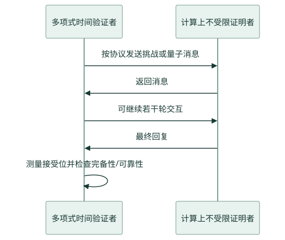

18｜从量子态到通信任务：信道、容量与验证复杂度
第 05 章已经介绍密度矩阵、Kraus 算子和噪声，第 13 章介绍熵、距离、相对熵与 Holevo 量。本章把这些工具接到三个更接近研究论文的问题：怎样用一个矩阵表示整条信道？“一个信道能传多少信息”为什么没有唯一答案？BQP、QCMA、QMA、QIP 和通信复杂度究竟在计算什么资源？
建议先读第 03、05、07、13 章。连续变量小节还会用到第 09 章的光子硬件背景。
如果几年没有系统学数学，可以分三遍读。第一遍 读第 1 节的纯化算例、第 2 节的两个 Choi 矩阵、第 3 节的单次检验和第 4 节的擦除事件表；只需会矩阵乘法、偏迹和二元概率。第二遍 读各节的通式和第 5—7 节，练习把任务和资源说清。进阶回看 再读容量的正则化证明入口、量子指纹的编码存在性和第 8 节的 Gaussian 边界；这些不是理解第一个算例的门槛。
先统一几个角色。A A A B B B E E E R R R 不送入信道 的参考系统。信道 N : A → B \mathcal N:A\to B N : A → B n n n N ⊗ n \mathcal N^{\otimes n} N ⊗ n 每次使用 计，不是每秒。字母 R R R R ^ \hat R R ^
读完后，你应当能够：
从密度矩阵构造纯化，并用纯化理解根保真度；
在声明归一化约定后构造 Choi 矩阵，分别检查完全正和保迹；
区分经典容量、量子容量、私密容量和纠缠辅助经典容量；
区分 Helstrom 单副本判别与 Stein 多副本非对称检验；
解释为什么混态纠缠没有唯一的“纠缠百分比”；
用量词写出 QCMA/QMA 的完备性与可靠性条件；
在比较量子通信复杂度前先固定通信模型；
读懂连续变量中的正交分量、压缩和 Gaussian/非 Gaussian 边界。

图 1｜量子态、信道与容量概念之间的关系 · 横向较长时可在图内滚动 · 打开完整图 1. 纯化：混态可以来自更大系统的纯态
先从熟悉的抛硬币形式入手：
ρ A = ( 0.8 0 0 0.2 ) = 0.8 ∣ 0 ⟩ ⟨ 0 ∣ + 0.2 ∣ 1 ⟩ ⟨ 1 ∣ .
\rho_A=\begin{pmatrix}0.8&0\\0&0.2\end{pmatrix}
=0.8|0\rangle\langle0|+0.2|1\rangle\langle1|.
ρ A = ( 0.8 0 0 0.2 ) = 0.8∣0 ⟩ ⟨ 0∣ + 0.2∣1 ⟩ ⟨ 1∣. 只看 A A A 按计算基测量 时有 80 % 80\% 80% 20 % 20\% 20% 纯化的任务 是找一个更大系统 A R AR A R R R R 2 × 2 2\times2 2 × 2 R R R
先猜 ∣ ψ ⟩ A R = 0.8 ∣ 00 ⟩ + 0.2 ∣ 11 ⟩ |\psi\rangle_{AR}=\sqrt{0.8}|00\rangle+\sqrt{0.2}|11\rangle ∣ ψ ⟩ A R = 0.8 ∣00 ⟩ + 0.2 ∣11 ⟩ 0.8 + 0.2 = 1 0.8+0.2=1 0.8 + 0.2 = 1 ∣ 00 ⟩ , ∣ 01 ⟩ , ∣ 10 ⟩ , ∣ 11 ⟩ |00\rangle,|01\rangle,|10\rangle,|11\rangle ∣00 ⟩ , ∣01 ⟩ , ∣10 ⟩ , ∣11 ⟩ ∣ ψ ⟩ |\psi\rangle ∣ ψ ⟩ [ 0.8 , 0 , 0 , 0.2 ] T [\sqrt{0.8},0,0,\sqrt{0.2}]^T [ 0.8 , 0 , 0 , 0.2 ] T
∣ ψ ⟩ ⟨ ψ ∣ = ( 0.8 0 0 0.4 0 0 0 0 0 0 0 0 0.4 0 0 0.2 ) .
|\psi\rangle\langle\psi|
=\begin{pmatrix}
0.8&0&0&0.4\\
0&0&0&0\\
0&0&0&0\\
0.4&0&0&0.2
\end{pmatrix}.
∣ ψ ⟩ ⟨ ψ ∣ = 0.8 0 0 0.4 0 0 0 0 0 0 0 0 0.4 0 0 0.2 . 右上和左下的 0.4 = 0.8 0.2 0.4=\sqrt{0.8}\sqrt{0.2} 0.4 = 0.8 0.2 R R R ∣ 00 ⟩ ⟨ 11 ∣ |00\rangle\langle11| ∣00 ⟩ ⟨ 11∣ ∣ 0 ⟩ ⟨ 1 ∣ |0\rangle\langle1| ∣0 ⟩ ⟨ 1∣ diag ( 0.8 , 0.2 ) \operatorname{diag}(0.8,0.2) diag ( 0.8 , 0.2 )
进阶回看：一般谱分解。 若 ρ A \rho_A ρ A ∣ i ⟩ |i\rangle ∣ i ⟩ λ i \lambda_i λ i r r r A A A
ρ A = ∑ i = 1 r λ i ∣ i ⟩ ⟨ i ∣ , λ i > 0 , ∑ i λ i = 1.
\rho_A=\sum_{i=1}^r\lambda_i|i\rangle\langle i|,
\qquad
\lambda_i>0,\qquad \sum_i\lambda_i=1.
ρ A = i = 1 ∑ r λ i ∣ i ⟩ ⟨ i ∣ , λ i > 0 , i ∑ λ i = 1. 引入至少 r = rank ( ρ ) r=\operatorname{rank}(\rho) r = rank ( ρ ) R R R
∣ ψ ρ ⟩ A R = ∑ i = 1 r λ i ∣ i ⟩ A ∣ i ⟩ R .
|\psi_\rho\rangle_{AR}
=\sum_{i=1}^r\sqrt{\lambda_i}|i\rangle_A|i\rangle_R.
∣ ψ ρ ⟩ A R = i = 1 ∑ r λ i ∣ i ⟩ A ∣ i ⟩ R . 这是归一化纯态，因为
⟨ ψ ρ ∣ ψ ρ ⟩ = ∑ i λ i = 1.
\langle\psi_\rho|\psi_\rho\rangle
=\sum_i\lambda_i=1.
⟨ ψ ρ ∣ ψ ρ ⟩ = i ∑ λ i = 1. 把 R R R
Tr R ( ∣ ψ ρ ⟩ ⟨ ψ ρ ∣ ) = ∑ i , j λ i λ j ∣ i ⟩ ⟨ j ∣ A Tr ( ∣ i ⟩ ⟨ j ∣ R ) = ∑ i , j λ i λ j ∣ i ⟩ ⟨ j ∣ A δ i j = ∑ i λ i ∣ i ⟩ ⟨ i ∣ = ρ A .
\begin{aligned}
\operatorname{Tr}_R(|\psi_\rho\rangle\langle\psi_\rho|)
&=\sum_{i,j}\sqrt{\lambda_i\lambda_j}
|i\rangle\langle j|_A
\operatorname{Tr}(|i\rangle\langle j|_R)\\
&=\sum_{i,j}\sqrt{\lambda_i\lambda_j}
|i\rangle\langle j|_A\,\delta_{ij}\\
&=\sum_i\lambda_i|i\rangle\langle i|=\rho_A.
\end{aligned}
Tr R ( ∣ ψ ρ ⟩ ⟨ ψ ρ ∣ ) = i , j ∑ λ i λ j ∣ i ⟩ ⟨ j ∣ A Tr ( ∣ i ⟩ ⟨ j ∣ R ) = i , j ∑ λ i λ j ∣ i ⟩ ⟨ j ∣ A δ ij = i ∑ λ i ∣ i ⟩ ⟨ i ∣ = ρ A . 这样的 ∣ ψ ρ ⟩ A R |\psi_\rho\rangle_{AR} ∣ ψ ρ ⟩ A R ρ A \rho_A ρ A 纯化 。纯化不是唯一的：只在参考系统上施加等距变换 V R V_R V R
( I A ⊗ V R ) ∣ ψ ρ ⟩ ,
(I_A\otimes V_R)|\psi_\rho\rangle,
( I A ⊗ V R ) ∣ ψ ρ ⟩ , 对 R R R ρ A \rho_A ρ A
1.1 再用 I / 2 I/2 I /2
Bell 态
∣ Φ + ⟩ = ∣ 00 ⟩ + ∣ 11 ⟩ 2
|\Phi^+\rangle=\frac{|00\rangle+|11\rangle}{\sqrt2}
∣ Φ + ⟩ = 2 ∣00 ⟩ + ∣11 ⟩ 是 I / 2 I/2 I /2 ⟨ 0 ∣ 1 ⟩ \langle0|1\rangle ⟨ 0∣1 ⟩ ⟨ 1 ∣ 0 ⟩ \langle1|0\rangle ⟨ 1∣0 ⟩
Tr R ( ∣ Φ + ⟩ ⟨ Φ + ∣ ) = 1 2 ( ∣ 0 ⟩ ⟨ 0 ∣ + ∣ 1 ⟩ ⟨ 1 ∣ ) = I / 2.
\operatorname{Tr}_R(|\Phi^+\rangle\langle\Phi^+|)
=\frac12(|0\rangle\langle0|+|1\rangle\langle1|)=I/2.
Tr R ( ∣ Φ + ⟩ ⟨ Φ + ∣ ) = 2 1 ( ∣0 ⟩ ⟨ 0∣ + ∣1 ⟩ ⟨ 1∣ ) = I /2. 将 Bell 态的两个 1 / 2 1/\sqrt2 1/ 2 0.8 \sqrt{0.8} 0.8 0.2 \sqrt{0.2} 0.2 R R R R R R
1.2 Uhlmann 定理与本书的根保真度
本书采用根保真度
F ( ρ , σ ) = ∥ ρ σ ∥ 1 .
F(\rho,\sigma)
=\left\|\sqrt\rho\sqrt\sigma\right\|_1.
F ( ρ , σ ) = ρ σ 1 . Uhlmann 定理把它解释成纯化重叠。先选一个共同参考系统 R R R
dim R ≥ max { rank ( ρ ) , rank ( σ ) } ,
\dim R\ge
\max\{\operatorname{rank}(\rho),\operatorname{rank}(\sigma)\},
dim R ≥ max { rank ( ρ ) , rank ( σ )} , 并把固定的 ρ \rho ρ σ \sigma σ R R R
F ( ρ , σ ) = max ∣ ψ σ ⟩ ∣ ⟨ ψ ρ ∣ ψ σ ⟩ ∣ .
F(\rho,\sigma)
=\max_{|\psi_\sigma\rangle}
|\langle\psi_\rho|\psi_\sigma\rangle|.
F ( ρ , σ ) = ∣ ψ σ ⟩ max ∣ ⟨ ψ ρ ∣ ψ σ ⟩ ∣. 若一方是纯态 ∣ ϕ ⟩ |\phi\rangle ∣ ϕ ⟩
F ( ρ , ∣ ϕ ⟩ ) = ⟨ ϕ ∣ ρ ∣ ϕ ⟩ .
F(\rho,|\phi\rangle)
=\sqrt{\langle\phi|\rho|\phi\rangle}.
F ( ρ , ∣ ϕ ⟩) = ⟨ ϕ ∣ ρ ∣ ϕ ⟩ . 例如 ρ = I / 2 \rho=I/2 ρ = I /2 σ = ∣ 0 ⟩ ⟨ 0 ∣ \sigma=|0\rangle\langle0| σ = ∣0 ⟩ ⟨ 0∣ I / 2 I/2 I /2 ∣ Φ + ⟩ |\Phi^+\rangle ∣ Φ + ⟩ σ \sigma σ ∣ 00 ⟩ |00\rangle ∣00 ⟩ 1 / 2 1/\sqrt2 1/ 2
再把上一例的 ρ = diag ( 0.8 , 0.2 ) \rho=\operatorname{diag}(0.8,0.2) ρ = diag ( 0.8 , 0.2 ) ∣ 0 ⟩ |0\rangle ∣0 ⟩ F = ⟨ 0 ∣ ρ ∣ 0 ⟩ = 0.8 ≈ 0.8944 F=\sqrt{\langle0|\rho|0\rangle}=\sqrt{0.8}\approx0.8944 F = ⟨ 0∣ ρ ∣0 ⟩ = 0.8 ≈ 0.8944 0.8 ∣ 00 ⟩ + 0.2 ∣ 11 ⟩ \sqrt{0.8}|00\rangle+\sqrt{0.2}|11\rangle 0.8 ∣00 ⟩ + 0.2 ∣11 ⟩ ∣ 00 ⟩ |00\rangle ∣00 ⟩ 0.8 \sqrt{0.8} 0.8 根 保真度是 0.8944 0.8944 0.8944 0.8 0.8 0.8
纯化也解释了为什么量子信道会让两个候选态更难区分：把信道提升为“系统与环境上的等距演化”，再丢弃环境；丢弃信息不能降低根保真度。因此
F ( E ( ρ ) , E ( σ ) ) ≥ F ( ρ , σ ) .
F(\mathcal E(\rho),\mathcal E(\sigma))
\ge F(\rho,\sigma).
F ( E ( ρ ) , E ( σ )) ≥ F ( ρ , σ ) . 2. Choi–Jamiołkowski 对应：把整条信道写成一个矩阵
Kraus 算子描述“信道怎样作用”。Choi 矩阵把同一件事改写为一个二分算子，特别适合检查完全正、做凸优化和重构实验过程。
先说明要解决的难题。只检查一条映射把某个 密度矩阵送到合法密度矩阵，还不足以判定它可在实验中作用于纠缠系统的一半。量子信道必须是线性的、保迹的、完全正 的：对任意额外参考系统 R R R I R ⊗ E I_R\otimes\mathcal E I R ⊗ E
2.1 先声明归一化约定
本章使用未归一化最大纠缠向量
∣ Ω ⟩ A ′ A = ∑ i = 0 d A − 1 ∣ i ⟩ A ′ ∣ i ⟩ A .
|\Omega\rangle_{A'A}
=\sum_{i=0}^{d_A-1}|i\rangle_{A'}|i\rangle_A.
∣Ω ⟩ A ′ A = i = 0 ∑ d A − 1 ∣ i ⟩ A ′ ∣ i ⟩ A . 对线性映射 E : A → B \mathcal E:A\to B E : A → B
J E = ( I A ′ ⊗ E A → B ) ( ∣ Ω ⟩ ⟨ Ω ∣ ) = ∑ i , j ∣ i ⟩ ⟨ j ∣ A ′ ⊗ E ( ∣ i ⟩ ⟨ j ∣ ) B .
\begin{aligned}
J_{\mathcal E}
&=(I_{A'}\otimes\mathcal E_{A\to B})
(|\Omega\rangle\langle\Omega|)\\
&=\sum_{i,j}|i\rangle\langle j|_{A'}
\otimes\mathcal E(|i\rangle\langle j|)_B.
\end{aligned}
J E = ( I A ′ ⊗ E A → B ) ( ∣Ω ⟩ ⟨ Ω∣ ) = i , j ∑ ∣ i ⟩ ⟨ j ∣ A ′ ⊗ E ( ∣ i ⟩ ⟨ j ∣ ) B . 由它可以恢复映射：
E ( X ) = Tr A ′ [ ( X T ⊗ I B ) J E ] .
\mathcal E(X)
=\operatorname{Tr}_{A'}
\left[(X^T\otimes I_B)J_{\mathcal E}\right].
E ( X ) = Tr A ′ [ ( X T ⊗ I B ) J E ] . 这里的转置相对于定义 ∣ Ω ⟩ |\Omega\rangle ∣Ω ⟩
Tr A ′ [ ( X T ⊗ I ) ( ∣ i ⟩ ⟨ j ∣ ⊗ E ( ∣ i ⟩ ⟨ j ∣ ) ) ] = X i j E ( ∣ i ⟩ ⟨ j ∣ ) .
\operatorname{Tr}_{A'}
[(X^T\otimes I)(|i\rangle\langle j|\otimes\mathcal E(|i\rangle\langle j|))]
=X_{ij}\mathcal E(|i\rangle\langle j|).
Tr A ′ [( X T ⊗ I ) ( ∣ i ⟩ ⟨ j ∣ ⊗ E ( ∣ i ⟩ ⟨ j ∣ ))] = X ij E ( ∣ i ⟩ ⟨ j ∣ ) . 对有限维映射，有两条最重要的判据：
E 完全正 ⟺ J E ⪰ 0 ,
\mathcal E\text{ 完全正}
\quad\Longleftrightarrow\quad
J_{\mathcal E}\succeq0,
E 完全正 ⟺ J E ⪰ 0 , E 保迹 ⟺ Tr B J E = I A ′ .
\mathcal E\text{ 保迹}
\quad\Longleftrightarrow\quad
\operatorname{Tr}_B J_{\mathcal E}=I_{A'}.
E 保迹 ⟺ Tr B J E = I A ′ . 所以 J ⪰ 0 J\succeq0 J ⪰ 0
2.2 先手算恒等信道，再看反例
qubit 恒等信道 I ( X ) = X \mathcal I(X)=X I ( X ) = X ∣ Ω ⟩ = ∣ 00 ⟩ + ∣ 11 ⟩ |\Omega\rangle=|00\rangle+|11\rangle ∣Ω ⟩ = ∣00 ⟩ + ∣11 ⟩
J I = ∣ Ω ⟩ ⟨ Ω ∣ = ( 1 0 0 1 0 0 0 0 0 0 0 0 1 0 0 1 ) .
J_{\mathcal I}=|\Omega\rangle\langle\Omega|
=\begin{pmatrix}
1&0&0&1\\
0&0&0&0\\
0&0&0&0\\
1&0&0&1
\end{pmatrix}.
J I = ∣Ω ⟩ ⟨ Ω∣ = 1 0 0 1 0 0 0 0 0 0 0 0 1 0 0 1 . 例如右上角的 1 来自 ∣ 00 ⟩ ⟨ 11 ∣ |00\rangle\langle11| ∣00 ⟩ ⟨ 11∣ ∣ Φ + ⟩ = ∣ Ω ⟩ / 2 |\Phi^+\rangle=|\Omega\rangle/\sqrt2 ∣ Φ + ⟩ = ∣Ω ⟩ / 2 2 ∣ Φ + ⟩ ⟨ Φ + ∣ 2|\Phi^+\rangle\langle\Phi^+| 2∣ Φ + ⟩ ⟨ Φ + ∣ 2 , 0 , 0 , 0 2,0,0,0 2 , 0 , 0 , 0 ∣ 0 ⟩ ⟨ 0 ∣ + ∣ 1 ⟩ ⟨ 1 ∣ = I |0\rangle\langle0|+|1\rangle\langle1|=I ∣0 ⟩ ⟨ 0∣ + ∣1 ⟩ ⟨ 1∣ = I 未归一化 约定的输入维数。
为什么不能只要求“输入正就输出正”？转置映射 T ( X ) = X T \mathcal T(X)=X^T T ( X ) = X T
J T = ( 1 0 0 0 0 0 1 0 0 1 0 0 0 0 0 1 ) .
J_{\mathcal T}=\begin{pmatrix}
1&0&0&0\\
0&0&1&0\\
0&1&0&0\\
0&0&0&1
\end{pmatrix}.
J T = 1 0 0 0 0 0 1 0 0 1 0 0 0 0 0 1 . 中间 2 × 2 2\times2 2 × 2 ( 0 1 1 0 ) \left(\begin{smallmatrix}0&1\\1&0\end{smallmatrix}\right) ( 0 1 1 0 ) ( 1 , − 1 ) T / 2 (1,-1)^T/\sqrt2 ( 1 , − 1 ) T / 2 − 1 -1 − 1 J T J_{\mathcal T} J T − 1 -1 − 1
部分资料改用归一化 Bell 态 ∣ Φ ⟩ = ∣ Ω ⟩ / d A |\Phi\rangle=|\Omega\rangle/\sqrt{d_A} ∣Φ ⟩ = ∣Ω ⟩ / d A J E / d A J_{\mathcal E}/d_A J E / d A I A ′ / d A I_{A'}/d_A I A ′ / d A
2.3 手算：复位信道
第 05 章的复位信道为
R ( X ) = Tr ( X ) ∣ 0 ⟩ ⟨ 0 ∣ .
\mathcal R(X)=\operatorname{Tr}(X)|0\rangle\langle0|.
R ( X ) = Tr ( X ) ∣0 ⟩ ⟨ 0∣. 因为
R ( ∣ i ⟩ ⟨ j ∣ ) = δ i j ∣ 0 ⟩ ⟨ 0 ∣ ,
\mathcal R(|i\rangle\langle j|)
=\delta_{ij}|0\rangle\langle0|,
R ( ∣ i ⟩ ⟨ j ∣ ) = δ ij ∣0 ⟩ ⟨ 0∣ , 所以
J R = ∑ i ∣ i ⟩ ⟨ i ∣ ⊗ ∣ 0 ⟩ ⟨ 0 ∣ = I A ′ ⊗ ∣ 0 ⟩ ⟨ 0 ∣ .
J_{\mathcal R}
=\sum_i|i\rangle\langle i|\otimes|0\rangle\langle0|
=I_{A'}\otimes|0\rangle\langle0|.
J R = i ∑ ∣ i ⟩ ⟨ i ∣ ⊗ ∣0 ⟩ ⟨ 0∣ = I A ′ ⊗ ∣0 ⟩ ⟨ 0∣. 对 qubit 输入，在 ∣ 00 ⟩ , ∣ 01 ⟩ , ∣ 10 ⟩ , ∣ 11 ⟩ |00\rangle,|01\rangle,|10\rangle,|11\rangle ∣00 ⟩ , ∣01 ⟩ , ∣10 ⟩ , ∣11 ⟩
J R = diag ( 1 , 0 , 1 , 0 ) .
J_{\mathcal R}=\operatorname{diag}(1,0,1,0).
J R = diag ( 1 , 0 , 1 , 0 ) . 其特征值非负，所以映射完全正；又有
Tr B J R = I A ′ ,
\operatorname{Tr}_B J_{\mathcal R}=I_{A'},
Tr B J R = I A ′ , 所以它保迹。未归一化 Choi 矩阵的迹为输入维数 2，不应误判为“不是态所以不合法”。
3. 相对熵为何对应非对称假设检验
Helstrom 公式回答的是：只有一个样本、两种先验相等、两类错误合在一起时，最优猜测成功率是多少。量子相对熵对应另一种任务：有很多独立同分布副本，严格控制一种错误，再尽量压低另一种错误。
这里先固定语言：ρ \rho ρ σ \sigma σ ρ \rho ρ ρ \rho ρ 第一类错误 是 ρ \rho ρ 第二类错误 是 σ \sigma σ
令 0 ≤ T ≤ I 0\le T\le I 0 ≤ T ≤ I ρ \rho ρ ρ \rho ρ
α ( T ) = Tr [ ( I − T ) ρ ] .
\alpha(T)=\operatorname{Tr}[(I-T)\rho].
α ( T ) = Tr [( I − T ) ρ ] . 若真实态是 σ \sigma σ ρ \rho ρ
β ( T ) = Tr [ T σ ] .
\beta(T)=\operatorname{Tr}[T\sigma].
β ( T ) = Tr [ T σ ] . 固定 α ( T ) ≤ ϵ \alpha(T)\le\epsilon α ( T ) ≤ ϵ
D H ϵ ( ρ ∥ σ ) = − log 2 min 0 ≤ T ≤ I : α ( T ) ≤ ϵ β ( T ) .
D_H^\epsilon(\rho\|\sigma)
=-\log_2
\min_{0\le T\le I:\,\alpha(T)\le\epsilon}
\beta(T).
D H ϵ ( ρ ∥ σ ) = − log 2 0 ≤ T ≤ I : α ( T ) ≤ ϵ min β ( T ) . 为避免把渐近指数误读成有限样本概率，先记
β n ∗ ( ϵ ) = min 0 ≤ T n ≤ I : Tr [ ( I − T n ) ρ ⊗ n ] ≤ ϵ Tr [ T n σ ⊗ n ] .
\beta_n^*(\epsilon)
=\min_{\substack{0\le T_n\le I:\\
\operatorname{Tr}[(I-T_n)\rho^{\otimes n}]\le\epsilon}}
\operatorname{Tr}[T_n\sigma^{\otimes n}].
β n ∗ ( ϵ ) = 0 ≤ T n ≤ I : Tr [( I − T n ) ρ ⊗ n ] ≤ ϵ min Tr [ T n σ ⊗ n ] . 量子 Stein 引理说，对任意固定 0 < ϵ < 1 0<\epsilon<1 0 < ϵ < 1
lim n → ∞ 1 n D H ϵ ( ρ ⊗ n ∥ σ ⊗ n ) = D ( ρ ∥ σ ) .
\lim_{n\to\infty}\frac1n
D_H^\epsilon(\rho^{\otimes n}\|\sigma^{\otimes n})
=D(\rho\|\sigma).
n → ∞ lim n 1 D H ϵ ( ρ ⊗ n ∥ σ ⊗ n ) = D ( ρ ∥ σ ) . 也就是说，在第一类错误保持受控时，最优第二类错误满足
lim n → ∞ − 1 n log 2 β n ∗ ( ϵ ) = D ( ρ ∥ σ ) ,
\lim_{n\to\infty}-\frac1n\log_2\beta_n^*(\epsilon)
=D(\rho\|\sigma),
n → ∞ lim − n 1 log 2 β n ∗ ( ϵ ) = D ( ρ ∥ σ ) , 等价地，β n ∗ ( ϵ ) = 2 − n D ( ρ ∥ σ ) + o ( n ) \beta_n^*(\epsilon)=2^{-nD(\rho\|\sigma)+o(n)} β n ∗ ( ϵ ) = 2 − n D ( ρ ∥ σ ) + o ( n ) n n n ρ \rho ρ σ \sigma σ
这个表达式按常见有限相对熵情形理解，即 supp ( ρ ) ⊆ supp ( σ ) \operatorname{supp}(\rho)\subseteq\operatorname{supp}(\sigma) supp ( ρ ) ⊆ supp ( σ )
3.1 手算：两个可对易状态
取
ρ = diag ( 0.8 , 0.2 ) , σ = I / 2.
\rho=\operatorname{diag}(0.8,0.2),
\qquad
\sigma=I/2.
ρ = diag ( 0.8 , 0.2 ) , σ = I /2. 两者在同一基下对角，量子问题退化为经典二元分布：
D ( ρ ∥ σ ) = 0.8 log 2 0.8 0.5 + 0.2 log 2 0.2 0.5 = 0.8 log 2 1.6 + 0.2 log 2 0.4 ≈ 0.2781 bit .
\begin{aligned}
D(\rho\|\sigma)
&=0.8\log_2\frac{0.8}{0.5}
+0.2\log_2\frac{0.2}{0.5}\\
&=0.8\log_2 1.6+0.2\log_2 0.4\\
&\approx0.2781\text{ bit}.
\end{aligned}
D ( ρ ∥ σ ) = 0.8 log 2 0.5 0.8 + 0.2 log 2 0.5 0.2 = 0.8 log 2 1.6 + 0.2 log 2 0.4 ≈ 0.2781 bit . 它不是单副本猜对概率，也不是普通几何距离。Stein 引理还依赖独立同分布（i.i.d.）副本和固定错误预算；有限样本时应直接报告实际检验及两类错误。
同一对态的单副本小题。 限制第一类错误 α ≤ 0.1 \alpha\le0.1 α ≤ 0.1 ρ \rho ρ t 0 t_0 t 0 t 1 t_1 t 1 [ 0 , 1 ] [0,1] [ 0 , 1 ]
1 − α = 0.8 t 0 + 0.2 t 1 ≥ 0.9 , β = 0.5 t 0 + 0.5 t 1 .
1-\alpha=0.8t_0+0.2t_1\ge0.9,
\qquad
\beta=0.5t_0+0.5t_1.
1 − α = 0.8 t 0 + 0.2 t 1 ≥ 0.9 , β = 0.5 t 0 + 0.5 t 1 . “测到 0”对 ρ \rho ρ σ \sigma σ ρ \rho ρ 0.8 0.8 0.8 σ \sigma σ 0.5 0.5 0.5 t 0 = 1 t_0=1 t 0 = 1 0.1 0.1 0.1 ρ \rho ρ 0.2 t 1 = 0.1 0.2t_1=0.1 0.2 t 1 = 0.1 t 1 = 1 / 2 t_1=1/2 t 1 = 1/2 α = 0.1 \alpha=0.1 α = 0.1 β = 0.75 \beta=0.75 β = 0.75 D H 0.1 ( ρ ∥ σ ) = − log 2 ( 0.75 ) ≈ 0.4150 D_H^{0.1}(\rho\|\sigma)=-\log_2(0.75)\approx0.4150 D H 0.1 ( ρ ∥ σ ) = − log 2 ( 0.75 ) ≈ 0.4150 1 / 2 1/2 1/2 α ≤ 0.2 \alpha\le0.2 α ≤ 0.2 ( t 0 , t 1 ) = ( 1 , 0 ) (t_0,t_1)=(1,0) ( t 0 , t 1 ) = ( 1 , 0 ) β = 0.5 \beta=0.5 β = 0.5 D H 0.2 = 1 D_H^{0.2}=1 D H 0.2 = 1 [ 1 + 1 2 ∥ ρ − σ ∥ 1 ] / 2 = 0.65 [1+\tfrac12\|\rho-\sigma\|_1]/2=0.65 [ 1 + 2 1 ∥ ρ − σ ∥ 1 ] /2 = 0.65 α \alpha α
4. 信道容量：先问传什么，再问每次能传多少
“信道容量”不是一个没有下标的通用分数。相同物理信道可以传经典消息、未知量子态或私密经典消息；发送方和接收方也可能预先共享纠缠。资源不同，容量就不同。
容量是渐近概念：使用 n n n n → ∞ n\to\infty n → ∞
把它想成四份不同的考试卷：Alice 要传普通的 0/1 消息、要传未知量子态、要传 Bob 可读而环境尽量不知道的秘密消息，或在预先共享 Bell 对帮助下传普通消息。虽然每题使用同一物理线路，及格条件和准许带入的资源并不同。下表的“bit/use”是平均每次信道使用的渐近速率；例如 0.75 0.75 0.75 0.75 0.75 0.75 100 100 100 75 75 75
容量按“每次使用”计，不等于每秒吞吐。后者还依赖一次使用耗时、并行度、编码块长、失败重试和控制延迟。
“可靠”是说存在一串越来越长的编码方案，使整体解码错误趋于 0；“私密”还需让环境关于消息的泄漏趋于 0（具体采用的渐近泄漏准则须与定理匹配）。单次互信息或一次好看的实验数据，都不是这一渐近可达性证明。
4.1 经典容量：Holevo 量还要对很多次使用取极限
对一次信道使用，优化输入态系综（ensemble）的 Holevo 量：
χ ( N ) = max { p x , ρ x } [ S ( ∑ x p x N ( ρ x ) ) − ∑ x p x S ( N ( ρ x ) ) ] .
\chi(\mathcal N)
=\max_{\{p_x,\rho_x\}}
\left[
S\!\left(\sum_xp_x\mathcal N(\rho_x)\right)
-\sum_xp_xS(\mathcal N(\rho_x))
\right].
χ ( N ) = { p x , ρ x } max [ S ( x ∑ p x N ( ρ x ) ) − x ∑ p x S ( N ( ρ x )) ] . 一般无辅助经典容量为
C ( N ) = lim n → ∞ 1 n χ ( N ⊗ n ) .
C(\mathcal N)
=\lim_{n\to\infty}\frac1n
\chi(\mathcal N^{\otimes n}).
C ( N ) = n → ∞ lim n 1 χ ( N ⊗ n ) . 为什么多一个极限？一次最优系综只回答单次使用；若把若干次输入联合编码，所得最优信息不必等于“单次最优乘次数”。令 n n n n n n
第 13 章的 I a c c ≤ χ I_{\rm acc}\le\chi I acc ≤ χ χ \chi χ χ ( N ) \chi(\mathcal N) χ ( N ) C ( N ) C(\mathcal N) C ( N )
4.2 量子容量：相干信息可以为负
取输入态 ρ A \rho_A ρ A ∣ ψ ρ ⟩ R A |\psi_\rho\rangle_{RA} ∣ ψ ρ ⟩ R A A A A
ω R B = ( I R ⊗ N A → B ) ( ψ R A ) .
\omega_{RB}
=(I_R\otimes\mathcal N_{A\to B})(\psi_{RA}).
ω RB = ( I R ⊗ N A → B ) ( ψ R A ) . 相干信息定义为
I c ( ρ , N ) = S ( B ) ω − S ( R B ) ω = − S ( R ∣ B ) ω .
I_c(\rho,\mathcal N)
=S(B)_\omega-S(RB)_\omega
=-S(R|B)_\omega.
I c ( ρ , N ) = S ( B ) ω − S ( RB ) ω = − S ( R ∣ B ) ω . 一般量子容量需要正则化：
Q ( N ) = lim n → ∞ 1 n max ρ ( n ) I c ( ρ ( n ) , N ⊗ n ) .
Q(\mathcal N)
=\lim_{n\to\infty}\frac1n
\max_{\rho^{(n)}}
I_c(\rho^{(n)},\mathcal N^{\otimes n}).
Q ( N ) = n → ∞ lim n 1 ρ ( n ) max I c ( ρ ( n ) , N ⊗ n ) . I c I_c I c
这里可以顺手排除一个符号疑问：若输入 ρ \rho ρ R R R R B RB RB B B B S ( B ) − S ( R B ) = 0 S(B)-S(RB)=0 S ( B ) − S ( RB ) = 0 某些特定输入 的相干信息，不是最终容量为负。这个零输入基线不意味着纯态编码能传任意未知量子态，它只用于检查公式的非负性。
4.3 私密经典容量：接收方与环境的信息差
选定信道的 Stinespring 等距扩张后，输出分成接收方 B B B E E E 互补信道 N c \mathcal N^c N c D \mathcal D D N c = D ∘ N \mathcal N^c=\mathcal D\circ\mathcal N N c = D ∘ N N \mathcal N N 可降解 ；若反过来 N = D ∘ N c \mathcal N=\mathcal D\circ\mathcal N^c N = D ∘ N c 反降解 。对经典变量 X X X { p x , ρ x } \{p_x,\rho_x\} { p x , ρ x }
P ( 1 ) ( N ) = max { p x , ρ x } [ I ( X : B ) − I ( X : E ) ] .
P^{(1)}(\mathcal N)
=\max_{\{p_x,\rho_x\}}
\bigl[I(X:B)-I(X:E)\bigr].
P ( 1 ) ( N ) = { p x , ρ x } max [ I ( X : B ) − I ( X : E ) ] . 第一项要求 Bob 能读出消息，第二项扣除环境可能获得的信息。一般无辅助私密容量仍需正则化：
P ( N ) = lim n → ∞ 1 n P ( 1 ) ( N ⊗ n ) .
P(\mathcal N)
=\lim_{n\to\infty}\frac1n
P^{(1)}(\mathcal N^{\otimes n}).
P ( N ) = n → ∞ lim n 1 P ( 1 ) ( N ⊗ n ) . 这里的 P ( N ) P(\mathcal N) P ( N ) P P P Q Q Q
4.4 纠缠辅助经典容量
若发送方与接收方预先共享无限纠缠，则
C E ( N ) = max ρ A I ( R : B ) ω .
C_E(\mathcal N)
=\max_{\rho_A}I(R:B)_\omega.
C E ( N ) = ρ A max I ( R : B ) ω . 这个公式不需正则化。对理想 qubit 信道，C E = 2 C_E=2 C E = 2
4.5 完整算例：qubit 擦除信道
擦除信道以概率 1 − ε 1-\varepsilon 1 − ε ε \varepsilon ε ∣ e ⟩ |e\rangle ∣ e ⟩
E ε ( ρ ) = ( 1 − ε ) ρ + ε ∣ e ⟩ ⟨ e ∣ .
\mathcal E_\varepsilon(\rho)
=(1-\varepsilon)\rho
+\varepsilon|e\rangle\langle e|.
E ε ( ρ ) = ( 1 − ε ) ρ + ε ∣ e ⟩ ⟨ e ∣. 接收方知道哪些位置被擦除，因为旗标与输入空间正交。
先看一份完全不涉及熵的小表。设 Alice 用 ∣ 0 ⟩ |0\rangle ∣0 ⟩ ∣ 1 ⟩ |1\rangle ∣1 ⟩ 1 / 2 1/2 1/2 ε = 1 / 4 \varepsilon=1/4 ε = 1/4
大块编码可以利用“哪些位置丢了”的信息恢复一部分消息，得到下述 C = 3 / 4 C=3/4 C = 3/4 Q Q Q
经典容量。 用正交态 ∣ 0 ⟩ , ∣ 1 ⟩ |0\rangle,|1\rangle ∣0 ⟩ , ∣1 ⟩ 1 − ε 1-\varepsilon 1 − ε
上界也能把“联合编码是否可能绕过它”说清。使用 n n n S S S 没有 被擦除的位置集合；S S S X X X S S S n n n S S S 2 ∣ S ∣ 2^{|S|} 2 ∣ S ∣ log 2 ( 2 ∣ S ∣ ) = ∣ S ∣ \log_2(2^{|S|})=|S| log 2 ( 2 ∣ S ∣ ) = ∣ S ∣ S S S
I ( X : B , S ) = I ( X : B ∣ S ) ≤ ∑ S Pr ( S ) ∣ S ∣ = E ∣ S ∣ = n ( 1 − ε ) .
\begin{aligned}
I(X:B,S)&=I(X:B\mid S)\\
&\le\sum_S\Pr(S)|S|\\
&=\mathbb E|S|=n(1-\varepsilon).
\end{aligned}
I ( X : B , S ) = I ( X : B ∣ S ) ≤ S ∑ Pr ( S ) ∣ S ∣ = E ∣ S ∣ = n ( 1 − ε ) . 这里 B B B S S S K K K X ^ \widehat X X p e p_e p e
log 2 K ≤ I ( X : X ^ ) + h 2 ( p e ) + p e log 2 ( K − 1 ) , I ( X : X ^ ) ≤ I ( X : B , S ) ≤ n ( 1 − ε ) .
\begin{aligned}
\log_2K
&\le I(X:\widehat X)+h_2(p_e)\\
&\quad+p_e\log_2(K-1),\\
I(X:\widehat X)&\le I(X:B,S)\le n(1-\varepsilon).
\end{aligned}
log 2 K I ( X : X ) ≤ I ( X : X ) + h 2 ( p e ) + p e log 2 ( K − 1 ) , ≤ I ( X : B , S ) ≤ n ( 1 − ε ) . 第二个不等号用了“译码是对 B , S B,S B , S log 2 ( K − 1 ) ≤ log 2 K \log_2(K-1)\le\log_2K log 2 ( K − 1 ) ≤ log 2 K
( 1 − p e ) log 2 K n ≤ 1 − ε + h 2 ( p e ) n .
(1-p_e)\frac{\log_2K}{n}
\le 1-\varepsilon+\frac{h_2(p_e)}{n}.
( 1 − p e ) n log 2 K ≤ 1 − ε + n h 2 ( p e ) . 左边的 log 2 K / n \log_2K/n log 2 K / n p e → 0 p_e\to0 p e → 0 1 − ε 1-\varepsilon 1 − ε h 2 h_2 h 2
C ( E ε ) = 1 − ε .
C(\mathcal E_\varepsilon)=1-\varepsilon.
C ( E ε ) = 1 − ε . 量子容量。 对最大混合输入 I / 2 I/2 I /2 B B B
S ( B ) = h 2 ( ε ) + ( 1 − ε ) ,
S(B)=h_2(\varepsilon)+(1-\varepsilon),
S ( B ) = h 2 ( ε ) + ( 1 − ε ) , 因为“擦除/未擦除”旗标贡献 h 2 ( ε ) h_2(\varepsilon) h 2 ( ε ) ( 1 − ε ) (1-\varepsilon) ( 1 − ε )
S ( E ) = h 2 ( ε ) + ε .
S(E)=h_2(\varepsilon)+\varepsilon.
S ( E ) = h 2 ( ε ) + ε . 整体 R B E RBE RBE S ( R B ) = S ( E ) S(RB)=S(E) S ( RB ) = S ( E )
I c = S ( B ) − S ( E ) = 1 − 2 ε .
I_c=S(B)-S(E)=1-2\varepsilon.
I c = S ( B ) − S ( E ) = 1 − 2 ε . 这一步只展示了 I / 2 I/2 I /2 ρ \rho ρ ρ \rho ρ
S ( B ) = h 2 ( ε ) + ( 1 − ε ) S ( ρ ) .
S(B)=h_2(\varepsilon)+(1-\varepsilon)S(\rho).
S ( B ) = h 2 ( ε ) + ( 1 − ε ) S ( ρ ) . 对 ρ \rho ρ R B RB RB S ( ρ ) S(\rho) S ( ρ )
S ( R B ) = h 2 ( ε ) + ε S ( ρ ) , I c ( ρ , E ε ) = ( 1 − 2 ε ) S ( ρ ) .
S(RB)=h_2(\varepsilon)+\varepsilon S(\rho),
\qquad
I_c(\rho,\mathcal E_\varepsilon)
=(1-2\varepsilon)S(\rho).
S ( RB ) = h 2 ( ε ) + εS ( ρ ) , I c ( ρ , E ε ) = ( 1 − 2 ε ) S ( ρ ) . 当 ε ≤ 1 / 2 \varepsilon\le1/2 ε ≤ 1/2 S ( ρ ) ≤ 1 S(\rho)\le1 S ( ρ ) ≤ 1 I / 2 I/2 I /2
擦除信道的完整结果是
Q ( E ε ) = max { 0 , 1 − 2 ε } .
Q(\mathcal E_\varepsilon)
=\max\{0,1-2\varepsilon\}.
Q ( E ε ) = max { 0 , 1 − 2 ε } . 当 ε ≤ 1 / 2 \varepsilon\le1/2 ε ≤ 1/2 ε ≥ 1 / 2 \varepsilon\ge1/2 ε ≥ 1/2 ε = 1 / 2 \varepsilon=1/2 ε = 1/2
私密经典容量。 用等概率正交态编码经典位 X X X 1 − ε 1-\varepsilon 1 − ε ε \varepsilon ε
I ( X : B ) = 1 − ε .
I(X:B)=1-\varepsilon.
I ( X : B ) = 1 − ε . 互补信道正好交换“送给 Bob”和“送给环境”的分支，因此
I ( X : E ) = ε .
I(X:E)=\varepsilon.
I ( X : E ) = ε . 私密信息之差是 1 − 2 ε 1-2\varepsilon 1 − 2 ε ε ≤ 1 / 2 \varepsilon\le1/2 ε ≤ 1/2 ε ≥ 1 / 2 \varepsilon\ge1/2 ε ≥ 1/2
P ( E ε ) = max { 0 , 1 − 2 ε } .
P(\mathcal E_\varepsilon)
=\max\{0,1-2\varepsilon\}.
P ( E ε ) = max { 0 , 1 − 2 ε } . 这个等式是擦除信道的特殊性质，不应推广成一般恒等式 P = Q P=Q P = Q
纠缠辅助经典容量。 对任意输入态 ρ \rho ρ
S ( B ) = h 2 ( ε ) + ( 1 − ε ) S ( ρ ) , S ( R B ) = h 2 ( ε ) + ε S ( ρ ) .
S(B)=h_2(\varepsilon)+(1-\varepsilon)S(\rho),
\qquad
S(RB)=h_2(\varepsilon)+\varepsilon S(\rho).
S ( B ) = h 2 ( ε ) + ( 1 − ε ) S ( ρ ) , S ( RB ) = h 2 ( ε ) + εS ( ρ ) . 于是
I ( R : B ) = 2 ( 1 − ε ) S ( ρ ) ≤ 2 ( 1 − ε ) ,
I(R:B)=2(1-\varepsilon)S(\rho)
\le2(1-\varepsilon),
I ( R : B ) = 2 ( 1 − ε ) S ( ρ ) ≤ 2 ( 1 − ε ) , 其中 qubit 的 S ( ρ ) ≤ 1 S(\rho)\le1 S ( ρ ) ≤ 1 ρ = I / 2 \rho=I/2 ρ = I /2 S ( R ) = 1 S(R)=1 S ( R ) = 1
I ( R : B ) = S ( R ) + S ( B ) − S ( R B ) = 1 + [ h 2 ( ε ) + 1 − ε ] − [ h 2 ( ε ) + ε ] = 2 ( 1 − ε ) .
\begin{aligned}
I(R:B)
&=S(R)+S(B)-S(RB)\\
&=1+[h_2(\varepsilon)+1-\varepsilon]
-[h_2(\varepsilon)+\varepsilon]\\
&=2(1-\varepsilon).
\end{aligned}
I ( R : B ) = S ( R ) + S ( B ) − S ( RB ) = 1 + [ h 2 ( ε ) + 1 − ε ] − [ h 2 ( ε ) + ε ] = 2 ( 1 − ε ) . 因此这不仅给出可达值，也完成了对所有输入的最优化：
C E ( E ε ) = 2 ( 1 − ε ) .
C_E(\mathcal E_\varepsilon)=2(1-\varepsilon).
C E ( E ε ) = 2 ( 1 − ε ) . 取 ε = 1 / 4 \varepsilon=1/4 ε = 1/4
C = 0.75 bit/use , Q = 0.50 qubit/use , P = 0.50 secret bit/use , C E = 1.50 bit/use .
C=0.75\text{ bit/use},
\quad
Q=0.50\text{ qubit/use},
\quad
P=0.50\text{ secret bit/use},
\quad
C_E=1.50\text{ bit/use}.
C = 0.75 bit/use , Q = 0.50 qubit/use , P = 0.50 secret bit/use , C E = 1.50 bit/use . 同一信道的四种任务得到三种数值，说明容量必须连同任务和辅助资源一起报告；P = Q P=Q P = Q
4.6 信道级数据处理
若在固定资源模型下给信道加编码前处理 A \mathcal A A D \mathcal D D N \mathcal N N
Cap ( D ∘ N ∘ A ) ≤ Cap ( N ) .
\operatorname{Cap}(\mathcal D\circ\mathcal N\circ\mathcal A)
\le\operatorname{Cap}(\mathcal N).
Cap ( D ∘ N ∘ A ) ≤ Cap ( N ) . 这里两边必须是同一种容量，并且对辅助资源采用相同的计数方式。预共享纠缠、双向经典通信或反馈若只在一边免费，比较就失去意义。
5. 混态纠缠：先声明免费操作，再选择资源量
纯二分态的纠缠熵由 Schmidt 系数唯一确定。混态不同：局部熵既可能来自纠缠，也可能来自经典随机混合，所以不存在一个在所有任务中都充当“纠缠百分比”的标量。
先看一个足以阻止误判的矩阵：
ρ A B s e p = 1 2 ∣ 00 ⟩ ⟨ 00 ∣ + 1 2 ∣ 11 ⟩ ⟨ 11 ∣ .
\rho_{AB}^{\rm sep}
=\tfrac12|00\rangle\langle00|+\tfrac12|11\rangle\langle11|.
ρ A B sep = 2 1 ∣00 ⟩ ⟨ 00∣ + 2 1 ∣11 ⟩ ⟨ 11∣. 它是两个乘积态 的概率混合，因此按下面的定义可分，没有纠缠。但丢弃 B B B A A A I / 2 I/2 I /2 S ( A ) = 1 S(A)=1 S ( A ) = 1 S ( A ) S(A) S ( A ) S ( A ) = 1 S(A)=1 S ( A ) = 1 A B AB A B
资源理论先回答三件事：
哪些态免费？二分纠缠理论通常把可分态视为免费态；
哪些操作免费？常见选择是局域操作与经典通信（LOCC）；
资源量应满足什么？至少在免费态上为零，并且不能在所选免费操作下增加。
可分态具有形式
ρ A B = ∑ k p k ρ A ( k ) ⊗ ρ B ( k ) .
\rho_{AB}=\sum_kp_k\rho_A^{(k)}\otimes\rho_B^{(k)}.
ρ A B = k ∑ p k ρ A ( k ) ⊗ ρ B ( k ) . “不是单个乘积态”不等于纠缠；上式可以是许多乘积态的经典混合。
不同操作任务产生不同量：纠缠形成关心制备一批目标态要消耗多少 Bell 对；可蒸馏纠缠关心从许多副本中能提取多少 Bell 对；负性则来自部分转置，容易计算，但不是所有纠缠任务的答案。
5.1 手算：加白噪声的 Bell 态
定义
ρ p = p ∣ Φ + ⟩ ⟨ Φ + ∣ + ( 1 − p ) I / 4 , 0 ≤ p ≤ 1.
\rho_p=p|\Phi^+\rangle\langle\Phi^+|+(1-p)I/4,
\qquad 0\le p\le1.
ρ p = p ∣ Φ + ⟩ ⟨ Φ + ∣ + ( 1 − p ) I /4 , 0 ≤ p ≤ 1. 对第二个量子比特做部分转置，在计算基次序下得到
ρ p T B = 1 4 ( 1 + p 0 0 0 0 1 − p 2 p 0 0 2 p 1 − p 0 0 0 0 1 + p ) .
\rho_p^{T_B}=\frac14
\begin{pmatrix}
1+p&0&0&0\\
0&1-p&2p&0\\
0&2p&1-p&0\\
0&0&0&1+p
\end{pmatrix}.
ρ p T B = 4 1 1 + p 0 0 0 0 1 − p 2 p 0 0 2 p 1 − p 0 0 0 0 1 + p . 中间 2 × 2 2\times2 2 × 2 ( 1 + p ) / 4 (1+p)/4 ( 1 + p ) /4 ( 1 − 3 p ) / 4 (1-3p)/4 ( 1 − 3 p ) /4
1 + p 4 , 1 + p 4 , 1 + p 4 , 1 − 3 p 4 .
\frac{1+p}{4},\quad
\frac{1+p}{4},\quad
\frac{1+p}{4},\quad
\frac{1-3p}{4}.
4 1 + p , 4 1 + p , 4 1 + p , 4 1 − 3 p . 负性定义为
N ( ρ ) = ∥ ρ T B ∥ 1 − 1 2 .
\mathcal N(\rho)
=\frac{\|\rho^{T_B}\|_1-1}{2}.
N ( ρ ) = 2 ∥ ρ T B ∥ 1 − 1 . 因此
N ( ρ p ) = max { 0 , 3 p − 1 4 } .
\mathcal N(\rho_p)
=\max\left\{0,\frac{3p-1}{4}\right\}.
N ( ρ p ) = max { 0 , 4 3 p − 1 } . 例如 p = 0.6 p=0.6 p = 0.6 0.4 , 0.4 , 0.4 , − 0.2 0.4,0.4,0.4,-0.2 0.4 , 0.4 , 0.4 , − 0.2 1 1 1 0.4 + 0.4 + 0.4 + 0.2 = 1.4 0.4+0.4+0.4+0.2=1.4 0.4 + 0.4 + 0.4 + 0.2 = 1.4 ( 1.4 − 1 ) / 2 = 0.2 (1.4-1)/2=0.2 ( 1.4 − 1 ) /2 = 0.2
对两 qubit 系统，部分转置为正还是可分的充要条件，所以 p > 1 / 3 p>1/3 p > 1/3

图 2｜纠缠资源的制备、蒸馏与度量 · 横向较长时可在图内滚动 · 打开完整图 LOCC、可分操作和所有“不从可分态生成纠缠”的操作不是同一个集合。谈资源单调性时必须先说采用哪组免费操作。
6. BQP、QCMA、QMA 与 QIP：缩写背后是不同协议
复杂度类讨论的是随输入长度增长的一族承诺问题，不是某台近期设备上的单个运行。一个承诺问题把合法输入分为 L y e s L_{\rm yes} L yes L n o L_{\rm no} L no
本节只需先抓住两个问题：“谁来提供帮助？”“检查帮助的机器本身有多快？”BQP 没有见证者，量子机器自己计算；QCMA 和 QMA 都有一个多项式时间量子 验证者，前者拿到经典串，后者可以拿到量子态；QIP 进一步让验证者与证明者来回交互。类别名称不表示某一台硬件已经实现了相应任务。
6.1 完备性与可靠性的量词
对输入 x x x V x V_x V x w w w c > s c>s c > s c − s ≥ 1 / poly ( ∣ x ∣ ) c-s\ge1/\operatorname{poly}(|x|) c − s ≥ 1/ poly ( ∣ x ∣ )
x ∈ L y e s : ∃ w , Pr [ V x ( w ) = 1 ] ≥ c , x ∈ L n o : ∀ w , Pr [ V x ( w ) = 1 ] ≤ s .
\begin{aligned}
x\in L_{\rm yes}&:
\quad\exists w,
\quad\Pr[V_x(w)=1]\ge c,\\
x\in L_{\rm no}&:
\quad\forall w,
\quad\Pr[V_x(w)=1]\le s.
\end{aligned}
x ∈ L yes x ∈ L no : ∃ w , Pr [ V x ( w ) = 1 ] ≥ c , : ∀ w , Pr [ V x ( w ) = 1 ] ≤ s . 第一行是完备性 ：是实例至少有一个好见证。第二行是可靠性 ：否实例不能被任何作弊见证高概率骗过。常用 c = 2 / 3 , s = 1 / 3 c=2/3,s=1/3 c = 2/3 , s = 1/3
量词顺序很重要。“yes 有一个好见证”绝不表示随便哪个见证都能通过；“no 的每一个见证都不行”才把作弊者包含进来。QCMA 的 w w w w w w 策略 ，同样要求 yes 有一种策略成功、no 的任何策略都不能高概率成功；不能把一次回复当成整个交互。
已知包含关系包括
B Q P ⊆ Q C M A ⊆ Q M A ⊆ P P , N P ⊆ Q C M A .
\mathrm{BQP}\subseteq\mathrm{QCMA}
\subseteq\mathrm{QMA}\subseteq\mathrm{PP},
\qquad
\mathrm{NP}\subseteq\mathrm{QCMA}.
BQP ⊆ QCMA ⊆ QMA ⊆ PP , NP ⊆ QCMA . 一般情形下 QCMA 是否等于 QMA 仍未知。QMA 完备的局域 Hamiltonian 问题必须带逆多项式承诺间隙；不能把“估计任意基态能量”不加精度条件地称为同一个问题。
6.2 小算例：验证就是优化接受算子
固定验证电路后，接受概率可写为
p a c c ( w ) = Tr ( M x w ) , 0 ⪯ M x ⪯ I .
p_{\rm acc}(w)=\operatorname{Tr}(M_xw),
\qquad 0\preceq M_x\preceq I.
p acc ( w ) = Tr ( M x w ) , 0 ⪯ M x ⪯ I . 允许任意量子见证时，最优接受率是 M x M_x M x
M = ∣ + ⟩ ⟨ + ∣ ,
M=|+\rangle\langle+|,
M = ∣ + ⟩ ⟨ + ∣ , 见证 ∣ + ⟩ |+\rangle ∣ + ⟩ ∣ 0 ⟩ |0\rangle ∣0 ⟩
∣ ⟨ + ∣ 0 ⟩ ∣ 2 = 1 / 2.
|\langle+|0\rangle|^2=1/2.
∣ ⟨ + ∣0 ⟩ ∣ 2 = 1/2. 这个玩具例只展示“对见证优化”的数学，不证明 QCMA 与 QMA 有分离。
6.3 QIP 与实验验证不是同一问题
QIP 中的证明者可以拥有无限计算能力，验证者通过交互限制作弊成功率。定理
Q I P = P S P A C E
\mathrm{QIP}=\mathrm{PSPACE}
QIP = PSPACE 描述这种协议能验证哪些语言，并不表示普通 BQP 计算机能直接高效求解所有 PSPACE 问题。
第 16 章讨论的态层析、经典阴影、能隙证书和陷阱测试更接近“怎样为一个设备输出收集可信证据”。二者都会说“验证”，但问题设置不同：前者关心协议的完备性与可靠性，后者还必须处理状态制备与测量误差（SPAM）、漂移、有限次采样（shots）、模型失配和实验资源。

图 3｜交互证明中验证者与证明者交换消息的顺序 · 横向较长时可在图内滚动 · 打开完整图 7. 通信复杂度：本地计算免费，只数通信
通信复杂度研究分布式任务。Alice 持有 x x x y y y f ( x , y ) f(x,y) f ( x , y )
报一个结果前必须固定：
单向、双向交互，还是 Alice 和 Bob 同时向裁判发送消息；
私有随机性还是公共随机性；
是否预共享纠缠；
精确计算还是允许有界错误；
研究总函数、关系还是带承诺的问题。
它不同于信道容量：容量问“同一物理信道每次使用能可靠传多少”；通信复杂度问“完成指定分布式函数至少要交换多少”。它也不同于墙钟时间，因为本地计算在模型中可能完全免费。
7.1 量子指纹：同时消息模型中的 equality
Alice 和 Bob 各持一个 n n n x = y x=y x = y
取一个长度 m = O ( n ) m=O(n) m = O ( n ) E E E x ≠ y x\ne y x = y
Δ x y = 1 m d H ( E ( x ) , E ( y ) )
\Delta_{xy}=\frac1m d_H(E(x),E(y))
Δ x y = m 1 d H ( E ( x ) , E ( y )) 还须满足双侧条件
δ ≤ Δ x y ≤ 1 − δ , 0 < δ < 1 2 .
\delta\le\Delta_{xy}\le1-\delta,
\qquad 0<\delta<\frac12.
δ ≤ Δ x y ≤ 1 − δ , 0 < δ < 2 1 . 距离下界保证码字不太相近，上界排除码字近乎互补；后者对下面的相位 指纹同样必要。
为什么长度仍可取 m = O ( n ) m=O(n) m = O ( n ) n n n m m m m / 2 m/2 m /2 [ m / 4 , 3 m / 4 ] [m/4,3m/4] [ m /4 , 3 m /4 ] 2 e − m / 8 2e^{-m/8} 2 e − m /8 2 n 2^n 2 n 2 2 n − 1 2^{2n-1} 2 2 n − 1
Pr ( 存在一对距离越界 ) < 2 2 n − 1 ⋅ 2 e − m / 8 = 2 2 n e − m / 8 .
\Pr(\text{存在一对距离越界})
<2^{2n-1}\cdot2e^{-m/8}
=2^{2n}e^{-m/8}.
Pr ( 存在一对距离越界 ) < 2 2 n − 1 ⋅ 2 e − m /8 = 2 2 n e − m /8 . 只要取 m > 16 n ln 2 m>16n\ln2 m > 16 n ln 2 所有 不同码字的距离都落在 [ m / 4 , 3 m / 4 ] [m/4,3m/4] [ m /4 , 3 m /4 ] 不需要 假设它们彼此独立。随机论证只保证码存在，不自动给出高效编码电路；通信复杂度把本地计算视为免费，实际部署还要单独计算编码时间。
双侧条件确实不可少：相对距离 Δ x y = 1 / 2 \Delta_{xy}=1/2 Δ x y = 1/2 Δ x y = 1 \Delta_{xy}=1 Δ x y = 1 − 1 -1 − 1
∣ ϕ x ⟩ = 1 m ∑ i = 1 m ( − 1 ) E ( x ) i ∣ i ⟩ .
|\phi_x\rangle
=\frac1{\sqrt m}
\sum_{i=1}^m(-1)^{E(x)_i}|i\rangle.
∣ ϕ x ⟩ = m 1 i = 1 ∑ m ( − 1 ) E ( x ) i ∣ i ⟩ . 它只需要 ⌈ log 2 m ⌉ = O ( log n ) \lceil\log_2m\rceil=O(\log n) ⌈ log 2 m ⌉ = O ( log n ) x = y x=y x = y x ≠ y x\ne y x = y
⟨ ϕ x ∣ ϕ y ⟩ = 1 m ∑ i ( − 1 ) E ( x ) i ⊕ E ( y ) i , = 1 − 2 Δ x y , ∣ ⟨ ϕ x ∣ ϕ y ⟩ ∣ = ∣ 1 − 2 Δ x y ∣ ≤ 1 − 2 δ .
\begin{aligned}
\langle\phi_x|\phi_y\rangle
&=\frac1m\sum_i(-1)^{E(x)_i\oplus E(y)_i},\\
&=1-2\Delta_{xy},\\
|\langle\phi_x|\phi_y\rangle|
&=|1-2\Delta_{xy}|\le1-2\delta.
\end{aligned}
⟨ ϕ x ∣ ϕ y ⟩ ∣ ⟨ ϕ x ∣ ϕ y ⟩ ∣ = m 1 i ∑ ( − 1 ) E ( x ) i ⊕ E ( y ) i , = 1 − 2 Δ x y , = ∣1 − 2 Δ x y ∣ ≤ 1 − 2 δ . 裁判做 swap test。“相同”结果的概率为
p s a m e = 1 + ∣ ⟨ ϕ x ∣ ϕ y ⟩ ∣ 2 2 .
p_{\rm same}
=\frac{1+|\langle\phi_x|\phi_y\rangle|^2}{2}.
p same = 2 1 + ∣ ⟨ ϕ x ∣ ϕ y ⟩ ∣ 2 . 若 x = y x=y x = y [ 1 / 4 , 3 / 4 ] [1/4,3/4] [ 1/4 , 3/4 ] δ = 1 / 4 \delta=1/4 δ = 1/4
p s a m e ≤ 1 + ( 1 / 2 ) 2 2 = 5 8 .
p_{\rm same}
\le\frac{1+(1/2)^2}{2}=\frac58.
p same ≤ 2 1 + ( 1/2 ) 2 = 8 5 . 重复 r r r ( 5 / 8 ) r (5/8)^r ( 5/8 ) r r = 10 r=10 r = 10 0.0091 0.0091 0.0091

图 4｜量子指纹在同时消息模型中的通信方式 · 横向较长时可在图内滚动 · 打开完整图 这一指数差距针对没有共享随机性的同时消息模型 ：经典私有随机指纹需要 Θ ( n ) \Theta(\sqrt n) Θ ( n ) O ( log n ) O(\log n) O ( log n )
8. 连续变量的最小入口
前面各章主要使用有限维 qubit。光场模式、机械振子和微波腔天然具有无限维 Hilbert 空间；它们常用连续正交分量描述。
本章采用
[ q ^ , p ^ ] = i , a ^ = q ^ + i p ^ 2 , a ^ † = q ^ − i p ^ 2 .
[\hat q,\hat p]=i,
\qquad
\hat a=\frac{\hat q+i\hat p}{\sqrt2},
\qquad
\hat a^\dagger=\frac{\hat q-i\hat p}{\sqrt2}.
[ q ^ , p ^ ] = i , a ^ = 2 q ^ + i p ^ , a ^ † = 2 q ^ − i p ^ . 可以反过来读这些定义：q ^ = ( a ^ + a ^ † ) / 2 \hat q=(\hat a+\hat a^\dagger)/\sqrt2 q ^ = ( a ^ + a ^ † ) / 2 p ^ = ( a ^ − a ^ † ) / ( i 2 ) \hat p=(\hat a-\hat a^\dagger)/(i\sqrt2) p ^ = ( a ^ − a ^ † ) / ( i 2 ) [ q ^ , p ^ ] = q ^ p ^ − p ^ q ^ = i [\hat q,\hat p]=\hat q\hat p-\hat p\hat q=i [ q ^ , p ^ ] = q ^ p ^ − p ^ q ^ = i [ a ^ , a ^ † ] = − i [ q ^ , p ^ ] = 1 [\hat a,\hat a^\dagger]=-i[\hat q,\hat p]=1 [ a ^ , a ^ † ] = − i [ q ^ , p ^ ] = 1
因此真空态满足
⟨ q ^ ⟩ = ⟨ p ^ ⟩ = 0 , Var ( q ^ ) = Var ( p ^ ) = 1 2 .
\langle \hat q\rangle=\langle \hat p\rangle=0,
\qquad
\operatorname{Var}(\hat q)=\operatorname{Var}(\hat p)=\frac12.
⟨ q ^ ⟩ = ⟨ p ^ ⟩ = 0 , Var ( q ^ ) = Var ( p ^ ) = 2 1 . 部分文献使用 [ q ^ , p ^ ] = 2 i [\hat q,\hat p]=2i [ q ^ , p ^ ] = 2 i
对 n n n
R ^ = ( q ^ 1 , p ^ 1 , … , q ^ n , p ^ n ) T .
\hat R=(\hat q_1,\hat p_1,\ldots,\hat q_n,\hat p_n)^T.
R ^ = ( q ^ 1 , p ^ 1 , … , q ^ n , p ^ n ) T . 一阶矩是 d i = ⟨ R ^ i ⟩ d_i=\langle \hat R_i\rangle d i = ⟨ R ^ i ⟩
V i j = 1 2 ⟨ { R ^ i − d i , R ^ j − d j } ⟩ .
V_{ij}=\frac12
\langle\{\hat R_i-d_i,\hat R_j-d_j\}\rangle.
V ij = 2 1 ⟨{ R ^ i − d i , R ^ j − d j }⟩ . Gaussian 态由一阶矩和协方差矩阵完全决定。位移、相移、分束器和压缩等 Gaussian 操作把 Gaussian 态仍映为 Gaussian 态；同相探测测量一个选定相位的正交分量，外差探测则联合估计两个正交分量并引入额外真空噪声。
8.1 手算：压缩真空不是“两个方向都更准”
选择压缩相位使 q ^ \hat q q ^ r > 0 r>0 r > 0
V ( r ) = 1 2 ( e − 2 r 0 0 e 2 r ) .
V(r)=\frac12
\begin{pmatrix}
e^{-2r}&0\\
0&e^{2r}
\end{pmatrix}.
V ( r ) = 2 1 ( e − 2 r 0 0 e 2 r ) . 因此
Var ( q ^ ) = 1 2 e − 2 r , Var ( p ^ ) = 1 2 e 2 r ,
\operatorname{Var}(\hat q)=\frac12e^{-2r},
\qquad
\operatorname{Var}(\hat p)=\frac12e^{2r},
Var ( q ^ ) = 2 1 e − 2 r , Var ( p ^ ) = 2 1 e 2 r , 而
Var ( q ^ ) Var ( p ^ ) = 1 4 .
\operatorname{Var}(\hat q)\operatorname{Var}(\hat p)=\frac14.
Var ( q ^ ) Var ( p ^ ) = 4 1 . 压低 q ^ \hat q q ^ p ^ \hat p p ^
若 r = ( ln 2 ) / 2 r=(\ln2)/2 r = ( ln 2 ) /2 e − 2 r = 1 / 2 e^{-2r}=1/2 e − 2 r = 1/2
Var ( q ^ ) = 1 / 4 , Var ( p ^ ) = 1.
\operatorname{Var}(\hat q)=1/4,
\qquad
\operatorname{Var}(\hat p)=1.
Var ( q ^ ) = 1/4 , Var ( p ^ ) = 1. 进阶回看：能量也要计入。 对零均值单模态，平均光子数 n ˉ = ⟨ a ^ † a ^ ⟩ = [ Var ( q ^ ) + Var ( p ^ ) − 1 ] / 2 \bar n=\langle\hat a^\dagger\hat a\rangle=[\operatorname{Var}(\hat q)+\operatorname{Var}(\hat p)-1]/2 n ˉ = ⟨ a ^ † a ^ ⟩ = [ Var ( q ^ ) + Var ( p ^ ) − 1 ] /2 n ˉ = ( 1 / 4 + 1 − 1 ) / 2 = 1 / 8 \bar n=(1/4+1-1)/2=1/8 n ˉ = ( 1/4 + 1 − 1 ) /2 = 1/8 r r r q ^ \hat q q ^ e 2 r e^{2r} e 2 r
当输入态、操作和测量都有可有效计算的 Gaussian 描述，模式数与步骤数按问题规模多项式增长，所需数值精度也只需多项式位数时，一阶矩和协方差矩阵可被经典计算机高效更新；相应的 Gaussian 测量与前馈也可高效采样。通用连续变量量子计算需要合适的非 Gaussian 资源，例如非 Gaussian 态、操作或测量；这不是说“任何含 Gaussian 元件的实验都可经典模拟”，也不涵盖无限能量或要求指数精度的形式输入。
无限维还带来有限维量子比特中不明显的边界：若不限制平均能量，某些容量或精度问题会变得不合物理实际。理想 GKP 码字是无限能量的梳状态；硬件实现只能制备有限压缩的近似态，估算所需资源时必须考虑有限能量与位移噪声。
9. 一张研究阅读清单
遇到量子信道、通信或验证论文时，依次填写：
输入、输出和参考系统分别是什么？
信道用 Kraus、Stinespring、Choi 还是 transfer matrix 表示？归一化与基序是什么？
研究的是单次任务、有限块长，还是 n → ∞ n\to\infty n → ∞
传的是经典信息、量子信息还是私密信息？共享纠缠、公共通信和反馈是否免费？
数据处理比较的两边是否使用同一资源模型？
若涉及假设检验，哪一种错误被约束，副本是否 i.i.d.？
若量化纠缠，免费操作是什么，所选量对应什么任务？
若声明复杂度优势，计算的是时间、查询、样本还是通信？
若出现验证者和证明者，写出完备性、可靠性和承诺间隙。
若系统是连续变量，[ q ^ , p ^ ] [\hat q,\hat p] [ q ^ , p ^ ]
10. 常见误区
“混态只是我们不知道哪个纯态。”同一密度矩阵有许多 ensemble 分解，不能指定一个唯一的隐藏纯态清单。
“Choi 矩阵正半定就一定是信道。”还必须满足保迹的偏迹条件。
“Holevo 量就是量子容量。”Holevo 量约束经典信息；量子容量由相干信息及其正则化刻画。
“容量是每秒多少。”容量通常按每次信道使用计；工程吞吐还需时钟、延迟和块长。
“混态纠缠看一个局部熵即可。”局部熵也可能来自经典混合。
“QCMA 的验证者是经典计算机。”QCMA 的见证是经典串，验证者仍是量子多项式时间。
“QIP=PSPACE，所以量子计算机能高效解决 PSPACE。”QIP 使用计算上不受限的证明者，不是 BQP 算法模型。
“通信复杂度小就表示程序运行快。”该模型通常把本地计算视为免费。
“压缩态在两个正交分量上都更精确。”一个方向的方差下降伴随共轭方向上升。
“Gaussian 光学自动给通用量子计算。”通用性需要跳出受限的、可高效模拟的 Gaussian 过程集合。
11. 自检
为 ρ = 0.8 ∣ 0 ⟩ ⟨ 0 ∣ + 0.2 ∣ 1 ⟩ ⟨ 1 ∣ \rho=0.8|0\rangle\langle0|+0.2|1\rangle\langle1| ρ = 0.8∣0 ⟩ ⟨ 0∣ + 0.2∣1 ⟩ ⟨ 1∣
本章用未归一化 ∣ Ω ⟩ |\Omega\rangle ∣Ω ⟩ J R J_{\mathcal R} J R
若改用归一化 ∣ Φ ⟩ = ∣ Ω ⟩ / d |\Phi\rangle=|\Omega\rangle/\sqrt d ∣Φ ⟩ = ∣Ω ⟩ / d
对 ρ = diag ( 0.8 , 0.2 ) \rho=\operatorname{diag}(0.8,0.2) ρ = diag ( 0.8 , 0.2 ) σ = I / 2 \sigma=I/2 σ = I /2 D ( ρ ∥ σ ) D(\rho\|\sigma) D ( ρ ∥ σ )
qubit 擦除信道的 ε = 1 / 4 \varepsilon=1/4 ε = 1/4 C , Q , P , C E C,Q,P,C_E C , Q , P , C E
对 ρ p = p ∣ Φ + ⟩ ⟨ Φ + ∣ + ( 1 − p ) I / 4 \rho_p=p|\Phi^+\rangle\langle\Phi^+|+(1-p)I/4 ρ p = p ∣ Φ + ⟩ ⟨ Φ + ∣ + ( 1 − p ) I /4 p = 0.6 p=0.6 p = 0.6
写出 QCMA/QMA 的 yes/no 量词。二者的验证者是否不同？见证是否不同？
为什么 Q I P = P S P A C E \mathrm{QIP}=\mathrm{PSPACE} QIP = PSPACE
量子指纹所用码的任意两个不同码字，其相对 Hamming 距离都在 [ 1 / 4 , 3 / 4 ] [1/4,3/4] [ 1/4 , 3/4 ]
在 [ q ^ , p ^ ] = i [\hat q,\hat p]=i [ q ^ , p ^ ] = i r = ( ln 2 ) / 2 r=(\ln2)/2 r = ( ln 2 ) /2
写出 qubit 恒等信道的未归一化 Choi 矩阵，求其本征值和输出侧偏迹。转置映射的 Choi 矩阵为什么不能通过完全正判据？
对第 3 节的两态，单副本且限制 α ≤ 0.1 \alpha\le0.1 α ≤ 0.1 ρ \rho ρ t t t t t t β \beta β D H 0.1 D_H^{0.1} D H 0.1
对 ρ A B s e p = 1 2 ∣ 00 ⟩ ⟨ 00 ∣ + 1 2 ∣ 11 ⟩ ⟨ 11 ∣ \rho_{AB}^{\rm sep}=\tfrac12|00\rangle\langle00|+\tfrac12|11\rangle\langle11| ρ A B sep = 2 1 ∣00 ⟩ ⟨ 00∣ + 2 1 ∣11 ⟩ ⟨ 11∣ ρ A \rho_A ρ A S ( A ) S(A) S ( A )
对第 8 节 r = ( ln 2 ) / 2 r=(\ln2)/2 r = ( ln 2 ) /2
答案见练习与答案：第 18 章 。
参考起点
John Watrous, The Theory of Quantum Information
W. F. Stinespring, Positive Functions on C ∗ C^* C ∗ (1955)。
A. Jamiołkowski, Linear transformations which preserve trace and positive semidefiniteness of operators (1972)。
M.-D. Choi, Completely positive linear maps on complex matrices (1975)。
A. Uhlmann, The “transition probability” in the state space of a ∗ * ∗ (1976)。
B. Schumacher and M. D. Westmoreland, Sending classical information via noisy quantum channels (1997)。
I. Devetak, The private classical capacity and quantum capacity of a quantum channel (2005)。
C. H. Bennett, D. P. DiVincenzo, J. A. Smolin, Capacities of Quantum Erasure Channels (1997)。
C. H. Bennett, P. W. Shor, J. A. Smolin, A. V. Thapliyal, Entanglement-assisted capacity of a quantum channel and the reverse Shannon theorem , IEEE Transactions on Information Theory 48, 2637–2655 (2002；开放预印本 )。
F. Hiai and D. Petz, The proper formula for relative entropy and its asymptotics in quantum probability (1991)。
T. Ogawa and H. Nagaoka, Strong converse and Stein's lemma in quantum hypothesis testing (2000)。
E. Chitambar and G. Gour, Quantum resource theories (2019)。
A. Peres, Separability Criterion for Density Matrices , Physical Review Letters 77, 1413–1415 (1996)。
M. Horodecki, P. Horodecki, R. Horodecki, Separability of Mixed States: Necessary and Sufficient Conditions , Physics Letters A 223, 1–8 (1996)。
G. Vidal and R. F. Werner, A computable measure of entanglement , Physical Review A 65, 032314 (2002)。
S. Aaronson and G. Kuperberg, Quantum Versus Classical Proofs and Advice (2007)。
R. Jain, Z. Ji, S. Upadhyay, J. Watrous, QIP = PSPACE , Journal of the ACM 58, Article 30 (2011；开放预印本 )。
H. Buhrman et al., Quantum Fingerprinting (2001)。
C. Weedbrook et al., Gaussian Quantum Information (2011/2012)。
S. D. Bartlett et al., Efficient Classical Simulation of Continuous Variable Quantum Information Processes (2002)。
D. Gottesman, A. Kitaev, J. Preskill, Encoding a qubit in an oscillator (2001)。